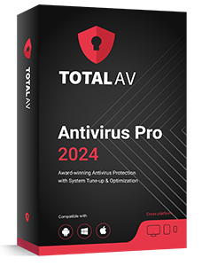
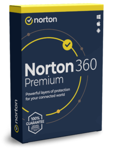
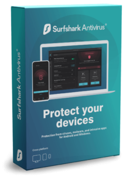

Bespaar € 100 op antivirus!


TotalAV biedt uitgebreide bescherming tegen malware met realtime monitoring voor diverse platforms.
- TotalAV beschermt tegen diverse malware.
- Het biedt realtime monitoring.
- Met een krachtige web shield.
7.451 Keer gedownload in de afgelopen 3 dagen.
Bezoek website

McAfee biedt complete, gebruiksvriendelijke bescherming voor al uw digitale apparaten.
- Realtime bescherming tegen bedreigingen.
- Meerdere beveiligingslagen.
- Krachtige tools voor veilig browsen.


Zeer nauwkeurige antivirussoftware met weinig impact en online back-upmogelijkheden
- Detecteert virussen zonder valse signaleringen
- Beschermt uw gebruikersnamen en wachtwoorden
- Voorkom eenvoudig infiltratie van hackers

Avira biedt betrouwbare bescherming tegen malware met minimale systeemimpact voor al uw digitale apparaten.
- Bescherming tegen diverse bedreigingen.
- Snel en accuraat detecteren van malware.
- Minimaliseert systeemimpact.

Avira biedt betrouwbare bescherming tegen malware met minimale systeemimpact voor al uw digitale apparaten.
- Bescherming tegen diverse bedreigingen.
- Snel en accuraat detecteren van malware.
- Minimaliseert systeemimpact.


Surfshark Antivirus biedt krachtige bescherming, geïntegreerde VPN-functionaliteit en uitgebreide privacytools.
- Surfshark Antivirus biedt real-time bescherming.
- Het integreert geavanceerde VPN-functionaliteit.
- Uitgebreide privacytools voor online anonimiteit.